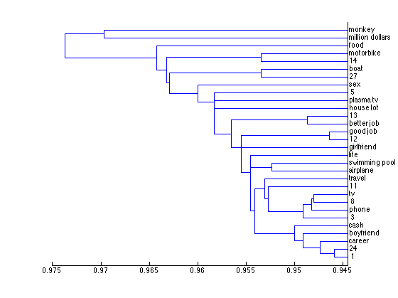

Contents
Chapter 3: Discovering Groups
"Programming Collective Intelligence - Building Smart Web 2.0 Applications" by Toby Segaran (O'Reilly Media, ISBN-10: 0-596-52932-5)
Here we use the sample dataset from the book. The book provides sample Python codes to get RSS feeds of the select blogs and count the words in those feeds to prepare the dataset. The idea is that one could use word frequency to determine if they write similar subjects or in similar styles.
The dataset is word counts organized by blog names (rows) x words (columns), but I will skip the dataset preparation steps (pages 29-33). One could possibly write RSS feed parser using xmlread function to get the data. feedlist.txt is included for creating dataset.
For this chapter we need to use features of Statistics Toolbox. This toolbox provides a wonderful data type called 'dataset' and we can use it to import the data.
blogdata = dataset('file','blogdata.txt',... 'delimiter','\t',... 'ReadVarNames', true,... 'ReadObsNames', true); % get list of words from the dataset as cell array words = get(blogdata, 'VarNames'); % get list of blog names from the dataset as cell array blognames = get(blogdata, 'ObsNames'); % convert the dataset to standard matrix data = double(blogdata);
Hierarchical Clustering (Pages 33-40)
Statistics Toolbox already provides functions to support Hierarchical Clustering, so I don't have to write any custom function.
Here, we use the familiar Pearson Correlation Coefficient to determine the distances, in order to offset the 'grade inflation' caused by varying degrees of word counts by blogs that Euclidean distance cannot deal with. Statisitcs Toolbox has 'corr' function that uses Pearson Correlation Coefficient by default.
distances = pdist(data,'corr'); % distances = pearson(data); % This is custom function I wrote - see 'pearson.m' - but the results is % the same as the above line of code. % Create hierarchical clustering using 'linkage' function clusters=linkage(distances); % Create dendorgram using 'dendrogram' function dendrogram(clusters, 'orientation','left','labels',blognames'); % get inconsistency coefficients, which is in the 4th column % I = inconsistent(clusters); % get groupings of clusters based on a certain inconsistency coefficient % threshold % groupings=cluster(clusters, 'cutoff', 1.0496); % That's it! Very simple.
Column Clustering (Pages 40-42)
Do hierachical clustering using words in the columns, rather than blog names. To do this, we simply have to transpose the data. The results shows which words are commonly used together. In marketing study, this could be used to which items are commonly bought together, for example. This reminds me of an urban legend that paper dipers and beer cases are bought together because dads buy them togther.
rdata=data'; distances = pdist(rdata,'corr'); clusters=linkage(distances); dendrogram(clusters, 'orientation','left','labels',words');
K-Means Clustering (Pages 42-44)
Hierarchical Clustering produces nice tree view as a result, but it doesn't really break the data into distinct groups without additional work. With K-means clustering, you can specify number of distinct clusters to generate.
% compute K-means clustering % pick a value for k -- I use '4' % determining the right k value is the hardest part of K-means clustering. [idx,ctrs]=kmeans(data,4,'distance','corr'); % display silhouette plot and check out how well clusters are separated. % silhouette(data,idx,'corr'); % set(get(gca,'Children'),'FaceColor',[.8 .8 1]) % xlabel('Silhouette Value') % ylabel('Cluster') % display data plot with centroids % plot(data(idx==1,1),data(idx==1,2),'r.','MarkerSize',12) % hold on % plot(data(idx==2,1),data(idx==2,2),'b.','MarkerSize',12) % hold on % plot(data(idx==3,1),data(idx==3,2),'g.','MarkerSize',12) % hold on % plot(data(idx==4,1),data(idx==4,2),'y.','MarkerSize',12) % plot(ctrs(:,1),ctrs(:,2),ctrs(:,3),ctrs(:,4),'kx',... % 'MarkerSize',12,'LineWidth',2) % plot(ctrs(:,1),ctrs(:,2),'ko',... % 'MarkerSize',12,'LineWidth',2) % legend('Cluster 1','Cluster 2','Cluster 3','Cluster 4','Centroids',... % 'Location','NW') % pick an cluster index to display the related blogs in the cluster % here I pick '4'. x=find(idx==4); disp(blognames(x,1))
'The Superficial - Because You're Ugly'
'Wonkette'
'Eschaton'
'Hot Air'
'Talking Points Memo: by Joshua Micah Marshall'
'Daily Kos'
'Go Fug Yourself'
'Andrew Sullivan | The Daily Dish'
'Michelle Malkin'
'SpikedHumor'
'Captain's Quarters'
'Power Line'
'The Blotter'
'Crooks and Liars'
'Think Progress'
'Little Green Footballs'
'NewsBusters.org - Exposing Liberal Media Bias'
'MetaFilter'
'Instapundit.com'
'PerezHilton.com'
'Gawker'
'The Huffington Post | Raw Feed'
Clusters of Preferences (Pages 44-46)
We now use a new dataset from a website called Zebo (htt://www.zebo.com). The book provides sample Python codes to download data from this website and create the new dataset. This requires parsing of plain unstructured HTML pages rather than well structured XML response, so it would be harder to implement in MATLAB. Again I am going to use the pre-made dataset the author of the book provides.
% we are going to use a new set of data, so clear the Workspace. clear all; % Since the source data file is in the sam format, we can reuse the same % script as before. The dataset is 0 (no interest) or 1 (interested) % organized by items(rows) x people (columns), zebodata = dataset('file','zebo.txt',... 'delimiter','\t',... 'ReadVarNames', true,... 'ReadObsNames', true); % get list of words from the dataset as cell array people = get(zebodata, 'VarNames'); % get list of blog names from the dataset as cell array wants = get(zebodata, 'ObsNames'); % convert the dataset to standard matrix data = double(zebodata);
Clustring Results (Page 47-48)
Because the dataset is 0-1 binary, Pearson Correlation Coefficient is no longer suitable. The book recommends Tanimoto coefficient as a more suitable metric. I found an implementation of Tanimoto distance function (tanimoto.m) in MATLAB Central which emulates pdist function: http://www.mathworks.com/matlabcentral/fileexchange/loadFile.do?objectId=13405&objectType=file
distances = tanimoto(data); clusters=linkage(distances); dendrogram(clusters, 'orientation','left','labels',wants); % One of the resulting cluster shows 'cash', 'boyfriend', 'career' etc. % grouped together. There are a lot of sad people out there.
Viewing Data in Two Dimensions (Pages 49-51)
So far the sample datasets are made up of two sets of variables, so we could plot them in 2D space. But in real life data doesn't always fit neatly into 2D, but we human have difficulty visualizing data in multi-dimensions. A technique called Multidimensional Scaling reduces complex dataset into 2D representation.
Here we go back to the blog data we used earlier, so let's bring them back.
clear all; blogdata = dataset('file','blogdata.txt',... 'delimiter','\t',... 'ReadVarNames', true,... 'ReadObsNames', true); words = get(blogdata, 'VarNames'); blognames = get(blogdata, 'ObsNames'); data = double(blogdata); % get the distance using Pearson Correlation Coefficient. distances = pdist(data,'corr');
Plot Multidimensional Scaling Result (Pages 51-52)
Here is MATLAB function for Multidimensional Scaling
[Y,eigvals] = cmdscale(distances); % Plot the result plot(Y(:,1),Y(:,2),'.') text(Y(:,1)+0.01,Y(:,2),blognames) xlabel('Distance') ylabel('Distance')